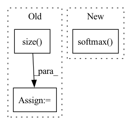

Pattern ID :30400
Before Change
if len(torch.unique(eos_mask.sum(1))) > 1:
raise ValueError("All examples must have the same number of <eos> tokens.")
vec = hidden_states[eos_mask, :].view(hidden_states.size( 0) , -1,
hidden_states.size(-1))[:, -1, :]
logits = self.classifier(vec)
prob = F.softmax(logits)
if labels is not None:
loss_fct = CrossEntropyLoss()
loss = loss_fct(logits, labels)After Change
vec = self.get_roberta_vec(source_ids)
logits = self.classifier(vec)
prob = nn.functional.softmax( logits)
if labels is not None:
loss_fct = nn.CrossEntropyLoss()
loss = loss_fct(logits, labels)In pattern: SUPERPATTERN
Frequency: 3
Non-data size: 3
Instances Fragment ID: 89935033
Project Name: salesforce/codet5
Commit Name: 0bf3c0c43e92fcf54d9df68c793ac22f2b60aad4
Time: 2021-10-29
Author: 337111657@qq.com
File Name: models.py
M Class Name: CloneModel
N Class Name: CloneModel
M Method Name: forward(3)
N Method Name: forward(3)
M Parent Class: nn.Module
N Parent Class: nn.Module
M File Name: models.py
N File Name: models.py
M Start Line: 111
M End Line: 125
N Start Line: 103
N End Line: 116
Before Change
self.fc = nn.Linear(num_layers * hidden_size, 1)
def forward(self, x):
batch_size = x.size( 0)
embedding = self.dropout(self.embed(x))
conv_in = embedding.permute(0, 2, 1)
conv_out = self.conv(conv_in)
values, indices = conv_out.max(dim=-1)After Change
attention = torch.tanh(
self.local2attn(rnn_out) + self.global2attn(global_rnn_out)
).permute(1, 0, 2)
alpha = F.softmax( attention.matmul(self.attn_scale), dim=-1)
rnn_out = rnn_out.permute(1, 0, 2)
memory = (alpha * rnn_out).sum(dim=1)
output = self.fc(memory).squeeze(1)
return output Fragment ID: 89935031
Project Name: jaketae/deep-malware-detection
Commit Name: e2f5ae102005c60e7e0db3dc31a8d9c23fce276b
Time: 2020-11-26
Author: jaesungtae@gmail.com
File Name: models.py
M Class Name: AttentionRCNN
N Class Name: AttentionRCNN
M Method Name: forward(2)
N Method Name: forward(2)
M Parent Class: nn.Module
N Parent Class: nn.Module
M File Name: models.py
N File Name: models.py
M Start Line: 186
M End Line: 194
N Start Line: 196
N End Line: 206
Before Change
def forward(self, input):
// conv features
conv = self.cnn(input)
b, c, h, w = conv.size()
assert h == 1, "the height of conv must be 1"
conv = conv.squeeze(2)
conv = conv.permute(2, 0, 1) // [w, b, c]
After Change
// add log_softmax to converge output
output = F.log_softmax(cls, dim=2)
if self.return_cls:
return output, F.softmax( cls, 2)
return output
Fragment ID: 89935024
Project Name: pooya-mohammadi/crnn-pytorch
Commit Name: 3f16fcac9f51e991f8412b1e1e9b2338f28c8ae7
Time: 2022-05-10
Author: pooyamohammadikazaj@gmail.com
File Name: models/crnn.py
M Class Name: CRNN
N Class Name: CRNN
M Method Name: forward(2)
N Method Name: forward(2)
M Parent Class: nn.Module
N Parent Class: nn.Module
M File Name: models/crnn.py
N File Name: models/crnn.py
M Start Line: 52
M End Line: 62
N Start Line: 33
N End Line: 40